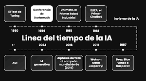

Historia de la Inteligencia Artificial
Los Inicios
La historia de la inteligencia artificial comienza en la década de 1950 con Alan Turing, quien formuló la famosa pregunta: "¿Pueden las máquinas pensar?". Esto dio lugar a la creación de la prueba de Turing, un test para medir la capacidad de una máquina para imitar la inteligencia humana.

Avances en la IA
A lo largo de las décadas, la IA ha pasado por varias etapas, desde los primeros programas simples que resolvían problemas hasta los avances actuales en aprendizaje automático y redes neuronales profundas.
Desarrollo Moderno
En los últimos años, el aumento en la capacidad de procesamiento de las computadoras y la disponibilidad de grandes volúmenes de datos ha permitido avances significativos en el campo de la inteligencia artificial, como los sistemas de visión por computadora y los algoritmos de predicción.